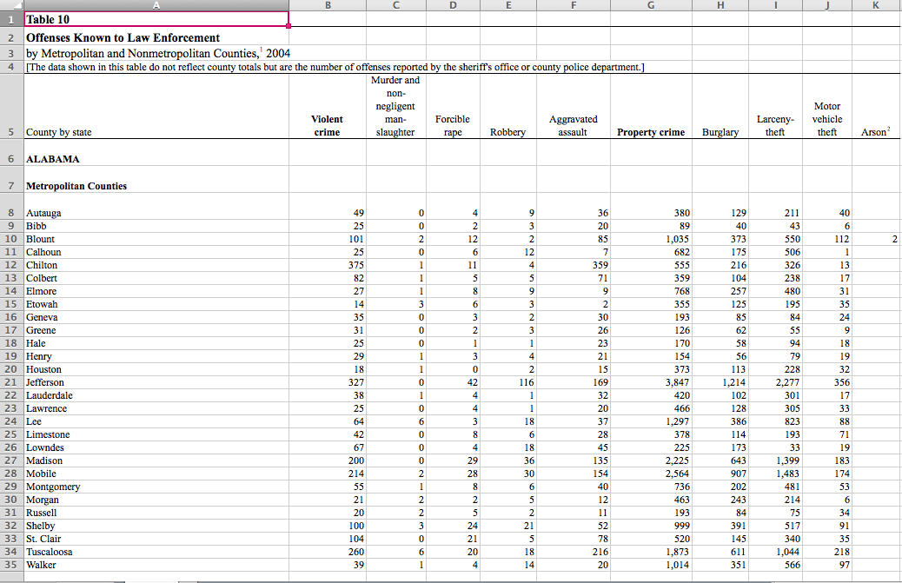
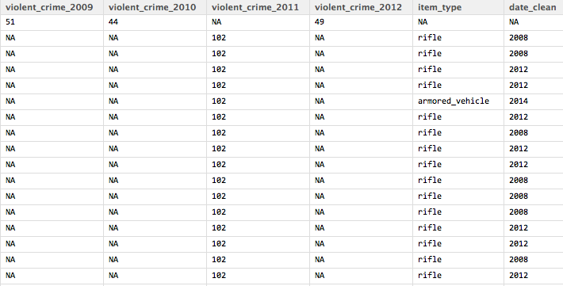

The discussion surrounding the recent murder of teenager Michael Brown by a Ferguson, Missouri police officer has brought mainstream attention to the lack of national data on civilians who have been shot or killed by law enforcement. [1]
Responding to this silence, some folks are trying to collect such data from the bottom-up. [2,3,4]
#Ferguson and similar events have renewed a concern about the militarization of local law enforcement from police to school districts. [5,6,7,8,9,10]
This project sasks,
To address these questions we will look at two sources of data. The first is violent crime data collected and reported annually by the FBI, and the distribution of military surplus to local law enforcement.

The FBI has periodically been releasing data about crime since at least the 1970s, and annually since the early 1980s. The portal into this data is http://www.fbi.gov/about-us/cjis/ucr/ucr-publications#Crime.
This project considers the Crime in the United States data. I utilized the data from 2004 through 2012 because this range provided data at the county level.
The data for each year is made available in MS Excel format. A good amount of familiarizing myself with the data was required, as well as a good bit of cleaning:
Here's an example of what the original data looked like: 
The cleaned and combined data results in 3,033 observations on 11 variables.
The NY Times recently published data that they received from the federal government regarding the distribution of military surplus to local law enforcement from 2006-2014. The data is available at https://github.com/TheUpshot/Military-Surplus-Gear.
The data they originally received from their FOIA request was delivered in a MS Excel file with states broken up alphabetically over five worksheets. Fortunately the Times also published this data in a csv format which included all state data in one file. This csv file is the data I used. The cleaning transformation included:
Here's an example of what the original data looked like:
The cleaned data results in 86,520 observations on 4 variables.
The aim is to find the change in violent crime over time and the acquisition of military items by local law enforcement.
>Data <- merge(crime, surplus, by = c( 'county', 'state' ), all = TRUE)The problem is they're speaking different languages. 
Associated Press. (n.d.). Ferguson protests: Rep. Hank Johnson proposes bill limiting military equipment for cops.
Bendery, J. (2014, August 14). House Democrat Readies Bill To Demilitarize Local Police. Retrieved October 20, 2014, from http://www.huffingtonpost.com/2014/08/14/police-militarization-bill_n_5679707.html
Don’t Call the Police “Militarized.” The Military Is Better Than This. (n.d.). Retrieved October 20, 2014, from http://gawker.com/dont-call-the-police-militarized-the-military-is-bet-1621523647
Ferguson highlights police use of military gear and tactics : News. (n.d.). Retrieved October 24, 2014, from http://www.stltoday.com/news/local/metro/ferguson-highlights-police-use-of-military-gear-and-tactics/article_69176ce4-f888-58ff-b33a-64924d2beb6d.html
Ferner, M. (2014, September 12). California School Cops Received Military Rifles, Grenade Launchers, Armored Vehicles. Retrieved October 20, 2014, from http://www.huffingtonpost.com/2014/09/12/militarized-police-california_n_5813014.html
Johnson, H. Stop Militarizing Law Enforcement Act.
MRAP. (2014, October 23). In Wikipedia, the free encyclopedia. Retrieved from https://en.wikipedia.org/w/index.php?title=MRAP&oldid=630831567
Police Militarization. (n.d.). Retrieved October 20, 2014, from http://www.huffingtonpost.com/news/police-militarization/
Rocha, V. (2014, August 29). Citing unsettling Ferguson images, Davis to return armored vehicle. Los Angeles Times. Retrieved from http://www.latimes.com/local/lanow/la-me-ln-davis-armored-vehicle-ferguson-images-20140829-story.html